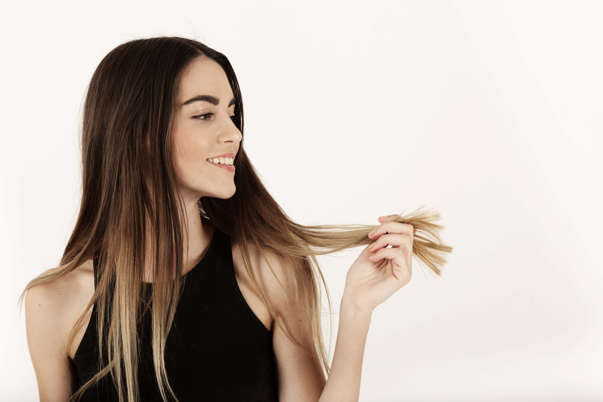

♥ Tipos de tratamento e o ideal para o seu cabelo: ♥
O tratamento capilar é responsável por reter ou repor a umidade dentro do fio, assim como devolver os nutrientes e as proteínas perdidos na fibra devido à ação de fatores mecânicos ou químicos. Para que esse processo alcance o resultado desejado, é preciso contar com os ingredientes.
Há uma série de procedimento populares que são responsáveis por trazer cuidados especiais para todos os tipos de danos sofridos pelos cabelos.
♥ 1. Cauterização ♥
Esse processo é especialmente indicado para cabelos que passaram por processo de descoloração, bem como para quem se submeteu a escovas progressivas, alisamentos e colorações caseiras, que deixam os fios porosos.
♥ 2. Umectação capilar ♥
A umectação capilar funciona graças à ação dos óleos essenciais. Eles hidratam e nutrem os fios, reparando problemas como frizz, ressecamento e pontas duplas.
♥ 3. Com creme de tratamento ♥
Os cremes de tratamento são ideais para hidratar os fios no dia a dia, sendo usados como uma espécie de condicionador mais potente. Eles atendem aos cabelos rebeldes e ressecados, fornecendo maior capacidade de controle.
♥ 4. Máscara capilar ♥

máscara capilar é um dos itens mais lembrados quando o assunto é hidratação dos fios, sendo ideal para uso constante. Tenha muita atenção na hora de selecionar a linha, já que cada uma delas é desenvolvida para um tipo de necessidade.
♥ 5. Queratinização ♥
Em geral, o tratamento começa com um shampoo de limpeza profunda, para dilatar as cutículas do cabelo. Isso permite que, aliada ao calor do secador, a queratina que normalmente é hidrolisada e ativada, seja aplicada e permeada.
O procedimento usa porções menores de queratina, permitindo um tratamento profundo. Esse produto é aplicado com o auxílio de uma ferramenta térmica específica para tratamentos capilares. Para fechar as cutículas, os profissionais usam uma chapinha de cerâmica em baixas temperaturas, mantendo o produto por mais tempo no fio.
♥ 6. Alinhamento capilar ♥
Esse procedimento ajuda a reduzir o efeito de frizz e o volume do cabelo. É comum que as pessoas confundam com a escova progressiva, pois o processo de aplicação é semelhante, necessitando da ação de uma chapinha.
O segredo para escolher o tratamento ideal entre os diferentes tipos de hidratação é optar por um produto que tenha componentes compatíveis com as necessidades do seu tipo de cabelo. Se seus fios estão muito danificados, por exemplo, é importante associar a reconstrução à hidratação. Pode ser que seja necessário, inclusive, mais de uma hidratação para obter a maciez desejada.